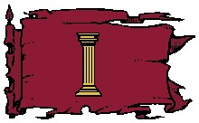

La fédération des comtés d'Egonzasthan
Histoire
Bien avant le châtiment, avant même la fondation de Tanith-Lenath, les terres d'Egonzasthan étaient déjà habitées par ce peuple étrange, les huvaliniens, des créatures humanoïdes dotées d'une queue de salamandre et d'un pouvoir de lévitation permanent. Puis, à partir de 1060 CV, commencèrent les premières vagues d'immigrations de non-humains en provenance d'Agramor. En effet, préoccupés par les prémices d'actes xénophobes et racistes perpétrés par un nombre grandissant de seigneurs du duché d'Agramor, de nombreuses personnes décidèrent de se rendre au sud, sur des terres qu'ils espéraient plus accueillantes. Différents comtés furent alors fondés sur ces terres que les huvaliniens appelaient Egonzasthan (ce qui signifie dans leur langue « villes aériennes » mais le nom a été utilisé par les autres races pour désigner toute la région). En 1092 CV, face à la pression de plus en plus forte imposée par le duché, les différents comtés se fédérèrent et donnèrent naissance à une nouvelle province du royaume, la fédération des comtés d'Egonzasthan. Ceci ne fut pas un acte inutile puisque, trois ans plus tard, le duché d'Agramor lançait sa 2ème guerre d'épuration du sang et chassait tous les nains, gnomes et halfelins de son territoire. L'immense majorité trouva alors refuge en Egonzasthan.
Géographie
Plus grande province du royaume en superficie et population, Egonzasthan est au niveau géographique à l'image de sa population : disparate. Désert de pierre à l'est, plaines au nord, montagnes au sud-est, forêts denses au sud-ouest. La capitale de la province est Egonzasthan-la-basse.
Population
Un huvalinien en lévitation, par maître Pils
Egonzasthan possède une population très hétérogène, source de nombreux conflits à l'intérieur de la province. Si un peu plus de la moitié de la population est humaine, l'autre moitié est un mélange d'elfes, de nains, de halfelins et d'huvaliniens. Les huvaliniens, premiers habitants de ces terres, ne sont donc plus du tout majoritaires, mais ont toutefois dans leurs mains tous les postes importants du pouvoir, administratifs et religieux. Essentiellement présents dans le comté d'Egonzasthan-la-basse et du Nord, et dans une moindre mesure dans celui de Fiohl, ils considèrent toujours toutes les autres races comme des immigrées, mais à la différence d'Agramor, au lieu de les rejeter, ils tentent plutôt de les exploiter. Notez que, bien que puissante, cette race est sur le déclin, car leur taux de natalité très faible les condamne inéluctablement à disparaître. Les elfes possèdent leur propre comté, Verdaïell, dans les forêts du sud de la province. Le comté de la Montagne Noire est celui des nains. Les halfelins se partagent le comté de Fiohl avec les huvaliniens et les humains. Ces derniers sont eux présents presque partout, sauf dans le comté elfe de Verdaïell. Et dans le comté de Zadhul, un lieu encore considéré comme sauvage par tous les habitants du royaume, quelques tribus d'orcs et de demi-orcs parviendraient à survivre au sein d'une nature hostile. Toutefois ces monstres ne font que très peu parler d'eux.
Villes principales. Egonzasthan-la-basse (la capitale), Fiohl, Kgoprnb, Valimell, Gladz, Zadhul, Sylfe, et près d'une centaine de villages.
Population totale. 123 000 habitants (60% humains, 15% elfes, 15% nains, 5% halfelins, 2% huvaliniens).
Cultes
Chaque race en Egonzasthan vénère ses propres divinités, mais l'unique religion officielle est celle des huvaliniens qui possèdent un dieu unique, Aladhel. Ce monothéisme est à l'origine de nombreuses frictions entre la fédération des comtés d'Egonzasthan et la ville sainte de Laelith et son Roi-Dieu.
Politique
RELATIONS
Egonzasthan lutte dans plusieurs directions. Outre ses nombreux conflits internes, cette fédération chaotique arrive tant bien que mal à faire resurgir un esprit de solidarité chez ses habitants lorsqu'il s'agit de s'opposer à Agramor. Le grand nombre de non-humains dans les comtés attisent les passions et le duché se verrait bien annexer Egonzasthan afin d'y rétablir la loi et l'unité. Mais même les humains des comtés ne veulent pas entendre parler de cette éventualité, et tous sont prêts à faire front aux ambitions du duc d'Agramor. Les humains d'Egonzasthan nourrissent d'ailleurs de forts ressentiments envers Agramor, qu'ils considèrent responsable du chaos de leur province de par les guerres d'épurations qui ont déclenchées de grandes vagues d'immigration vers leur terre. La fédération serait en guerre avec Agramor depuis longtemps sans les efforts diplomatiques du royaume.
Un autre conflit oppose Egonzasthan à Laelith. Mais celui-ci est d'ordre religieux, donc gravissime. En effet les huvaliniens pratiquent une religion monothéiste (Aladhel, dieu unique) qui n'est absolument pas du goût des autorités du royaume, et ceux-ci détenant le pouvoir dans la province, Laelith ne parvient pas malgré ses efforts à changer cette situation que les grands-prêtres considèrent comme une offense et une provocation.
La province des jardins de Jadhys entretient par contre depuis longtemps des relations commerciales privilégiées avec les huvaliniens.
Egonzasthan est une province politiquement instable. De par la diversité de ses habitants, putshs et coups d'état s'y succèdent invariablement dans presque tous les comtés. De fait, il n'existe aucun réel pouvoir politique central. Des réunions inter-comtés ont bien lieu deux fois par an à Egonzasthan-la-basse, la capitale fédérale, mais il n'y a jamais d'unanimité lorsqu'une décision est à prendre. Dans ce petit chaos politique le pouvoir religieux s'est donc imposé à tous comme le seul valable car le seul stable. Et celui-ci étant aux mains des huvaliniens depuis la nuit des temps en Egonzasthan (qui veillent plus que tout à ce qu'aucun culte ne s'implante de manière importante dans la province), ces derniers se considèrent comme les maîtres de la province toute entière, affirmation réfutée par toutes les autres races bien entendu. Mais il est tout de même un fait que les huvaliniens sont les plus influents dans la région.
Aujourd'hui la fédération est composé de 7 comtés :
- Egonzasthan-la-basse (capitale Egonzasthan-la-basse). Économiquement, c'est de loin le plus fort des 7 comtés. Et bien qu'Egonzasthan-la-basse soit reconnue comme la capitale fédérale de la province, aucun des autres comtés n'accepte de reconnaître celui-ci comme un leader. Essentiellement habité pas les humains et les huvaliniens, on y trouve toutes les races.
- Fiohl (capitale Fiohl). Le comté agricole de la province. Habité par les humains au nord et les halfelins dans les collines du sud.
- Nord (capitale Kgoprnb). Depuis toujours le rival d'Egonzasthan-la-basse, mais toujours le numéro 2. Essentiellement habité par les humains et quelques huvaliniens.
- Montagne Noire (capitale Valimell). Comté majoritairement nain. Ces derniers exploitent les riches filons de la principale chaîne de montagnes qui coupent Egonzasthan en deux.
- Est (capitale Gladz). Comté très agité car le premier en contact avec Agramor, et peu contrôlé. De fréquentes escarmouches ont lieu dans ses montagnes, et son pouvoir est le plus changeant des 7 comtés.
- Zadhul (capitale Zadhul). Zadhul est la fois la capitale et l'unique ville de ce comté. Ancien poste avancé construit pour protéger la province d'éventuelles invasions de créatures maléfiques par le grand glacier à l'ouest, ce n'est plus aujourd'hui qu'une ville de chasseurs, de trafiquants et de mercenaires. Qui d'autres pourraient vivre si près du désert de pierre...
- Verdaïelle (capitale Sylfe). Comté elfe. À l'abri dans leurs forêts, ceux-ci essayent de se tenir tant bien que mal à l'écart du chaos général. C'est la plus importante communauté elfe de tout le royaume.
Économie
La province d'Egonzasthan est vaste et bénéficie de nombreuses ressources. Des carrières d'Egonzasthan-la-basse est extrait la très recherchée Pierre Sacrée, qui sert de support à de nombreux scribes et écrivains, à la confection d'armes et à la construction. Les terres fertiles des comtés de Fiolh et du Nord donnent de bonnes et nombreuses récoltes. Dans le comté des Montagnes Noires, les nains exploitent de grandes mines qui regorgent de pierres précieuses, qui sont ensuite revendues aux jardins de Jadhys ou au matriarcat d'Olizya. Le bois des forêts de Verdaïell est utilisé pour la fabrication d'instruments de musique, Egonzasthan-la-basse est d'ailleurs réputé pour fabriquer les meilleurs instruments du monde. Enfin le sud du comté de Zadhul et les montagnes du comté de l'Est sont extraordinairement riches en plantes rares dont sont friands les herboristes et autres apothicaires.
Guide du routard
La ville d'Egonzasthan-la-basse. Pour sa formidable architecture que relève encore plus la Pierre Sacrée.
L'école d'architecture d'Egonzasthan-la-basse. La meilleure du royaume.
Les toilettes publiques d'Egonzasthan-la-basse. Uniques dans Faerûn.
La fête du Navire. Commémoration annuelle de l'arrivé des huvaliniens sur ces terres (tout est permis durant une semaine).
Écrit par blueace